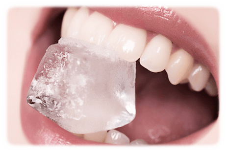

Sensibilidad dental: Cómo prevenirla

La sensibilidad dental se define como un dolor dental agudo causado por la exposición de la dentina y que aparece tras el contacto con estímulos externos aparentemente inofensivos como el calor o el frío, dulces o ácidos, o por tacto, y que no puede asociarse con cualquier otro tipo de patología bucal.
Existe cierta controversia sobre la etiología de este dolor, siendo la hipótesis hidrodinámica la más aceptada. Según esta hipótesis, los fluidos que están dentro de los túbulos dentinarios se alteran por cambios térmicos, físicos u osmóticos, estimulando receptores de presión que conducen a la excitación nerviosa, la cual se traduce en el dolor dental
En situación de salud, la dentina está protegida del medio oral por el esmalte (corona) y por el cemento (raíz). El esmalte es la parte más dura del organismo. El cemento, mucho más fino, débil y poroso que el esmalte, se encuentra protegido por la encía. Sin embargo, en determinadas zonas, sobre todo en el cuello de los dientes, puede existir poco esmalte o cemento que, si se pierden, exponen los túbulos dentinarios al medio oral.
Si existe recesión gingival, la fina capa de cemento queda en contacto con el medio oral y con frecuencia se pierde, ya que se desgasta por el cepillado dental y el uso de seda o palillos de dientes
La prevalencia de la sensibilidad dental es del 25%-30%(4), variando en función del grupo de población estudiado (más prevalente en individuos con enfermedad periodontal y fumadores). Se podría suponer que la sensibilidad dental aumenta con la edad, ya que el desgaste del esmalte y la retracción gingival serían mayores. Sin embargo, se observa que el mayor número de casos se da en la población entre 30 y 40 años, más prevalente en mujeres. Esto se debe a que al aumentar la edad disminuyen la permeabilidad de la dentina (se esclerosa) y la sensibilidad de los nervios. La dentina esclerosada y la dentina secundaria que se va formando son menos sensibles a estos estímulos.
La mayoría de los casos de sensibilidad dental están asociados a recesiones gingivales (68%). La sensibilidad más común es por contacto con frío, y es más frecuente su aparición en los caninos (25%) y premolares (24%), y en las caras vestibulares (93%)